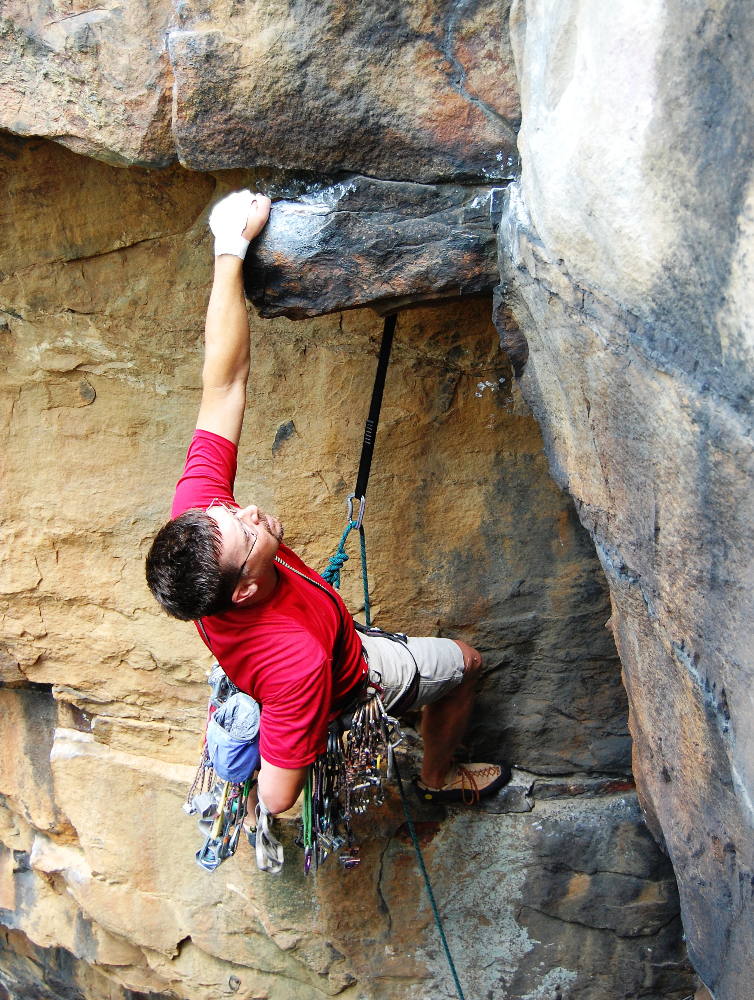
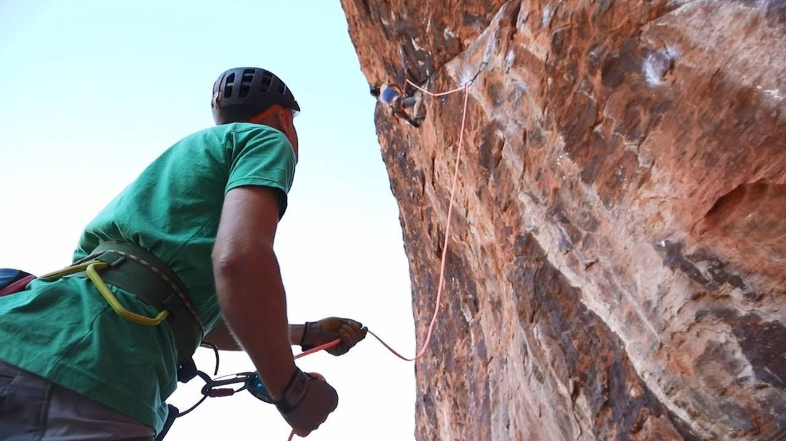
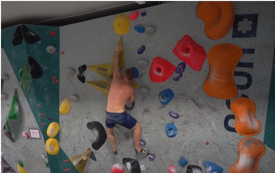

Tradicional (trad)
En un grupo de escaladores el primero (normalmente el líder o más experimentado) coloca agarres sobre la superficie escalada y cada integrante del grupo engancha su tramo de la cuerda a los agarres aunque también puede ser practicado por una sola persona.
Deportiva
Un solo escalador sigue una ruta predefinida y va enganchando su cuerda en agarres preinstalados
sobre la superficie.
En esta modalidad se puede usar un segundo escalador en la base de la superficie escalada actuando de contrapeso y evitando que caiga o fijar la propia cuerda en la base. De esta forma en caso de caida el escalador se sujetará gracias a la cuerda y al ultimo enganche al que la conectó.
Escalada en bloque o búlder (bouldering)
Se trata de uno de los tipos de escalada más practicada ya que no se necesita mucho equipaminto y se puede
realizar muchas veces en un corto periodo de tiempo. Esto la hace una buena modalidad para practicar e incluso
incrementar tu habilidad.
Consiste en escalar una corta distancia sin cuerda con una zona blanda en la base para poder caer sin peligro. En todos los rocódromos existen zonas de búlder y es en ellas donde se puede encontrar los tramos de mayor dificultad. En exteriores se suele practicar sobre agua o a muy poca altura para evitar dañarse al caer.
Solo
Esta modalidad es muy poco practicada debido a que es de lejos la más peligrosa y dificultosa.
Consiste en la forma de escalada más pura ya que el escalador hace el recorrido solo, sin
cuerda ni compañeros ni harneses ni ningún otro tipo de protección durante una escalada de largo
recorrido. De esta forma el escalador se arriesga a morir si cae ya que se llega a grandes alturas.

El escalador Alex Honnold realizó en 2017 la escalada Solo más difícil hasta la fecha en "El Capitan", Estados Unidos.